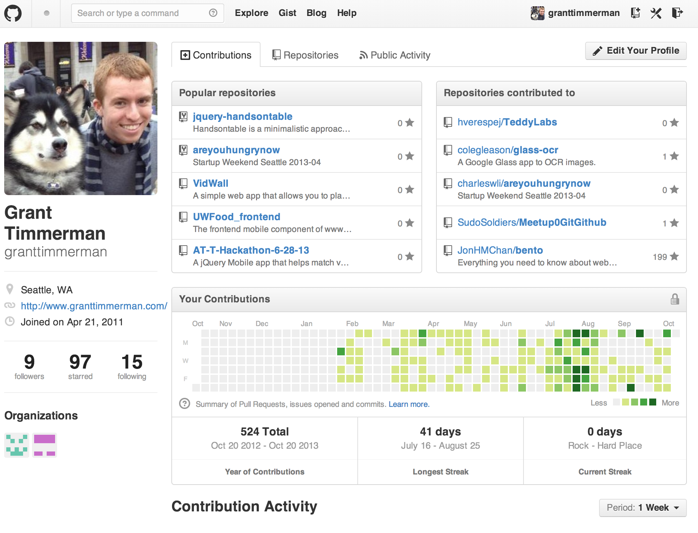
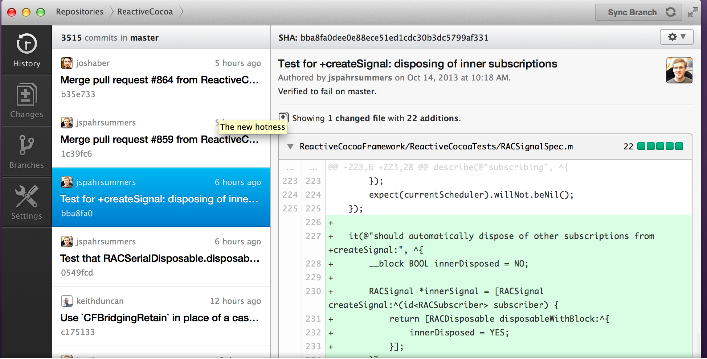
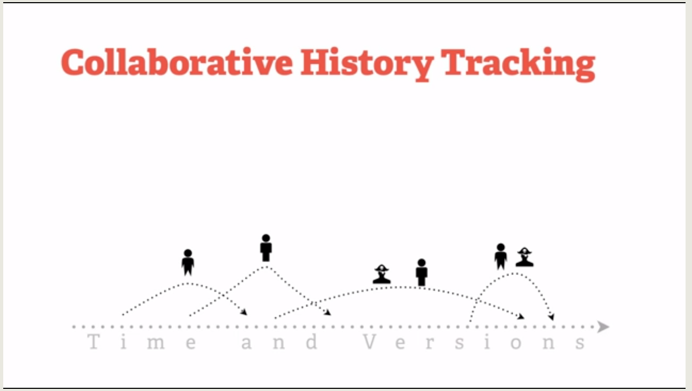

Meetup 0
Git and Github
Created by Grant Timmerman / @granttimmerman
Grant Timmerman
goel.im / github.com/thekarangoel
Tableau Software
Welcome!
Glad you could make it.
Karan Goel
We are Sudo Soldiers.
We are a group of hackers and learners who want teach each other skills.
Mission & Culture
- Hack
- Create
- Learn
Introductions
Git and Github

This is Git

This is Github
Git is a Source Code Management system
Originally developed by Linus Torvalds for Linux kernel development in 2005
Now it is one of the most common version control systems in the world.
What does it look like?
It also looks like this:
It keeps a history of your changes
It is team-centric.
It allows collaboration to happen naturally.
It is flexible.
It allows other coders to not block you.
It is powerful.
It has advanced features to satisfy your scripting needs.
How does it work?
git init myprojectcd myprojectgit add .git commit -m"My first commit!"
Github